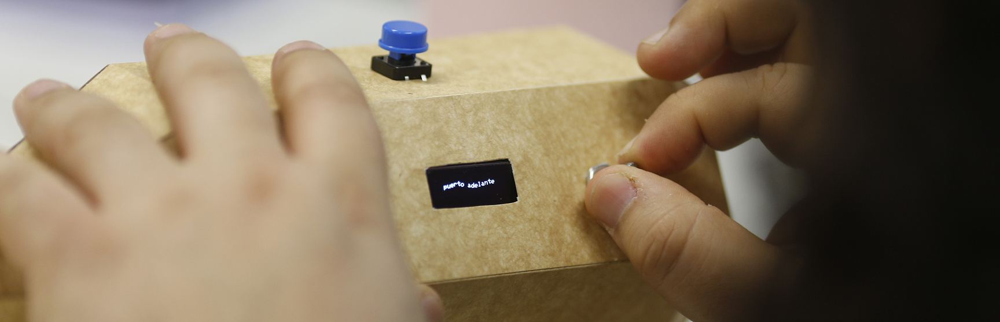
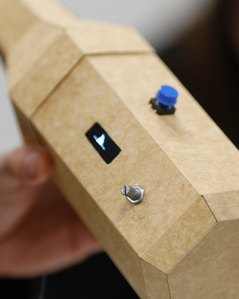
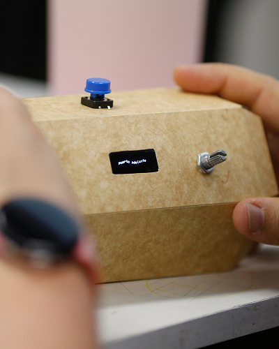
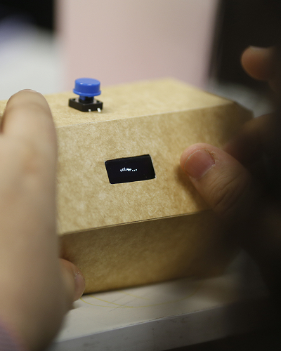
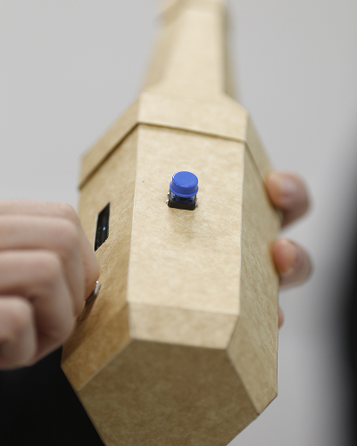

03 . Objeto poético y de programación
Irse y no volver es mi primera aproximación a la programación, el desafío era elegir un poema y traducirlo a un objeto físico e interactivo mediante código. Elegimos un fragmento de Puerto adelante, de Alejandra Pizarnik, resolviendo cómo convertir un verso en algo programable. Este proyecto fue el primer lugar donde entendimos que programar también es una forma de leer e interpretar un texto.
Equipo: Carla Núñez, Anais Marschhausen, Antonia Loch, Hugo Montoya, Natalia Pilar.



